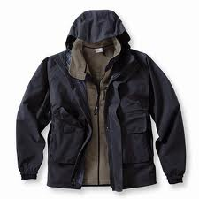
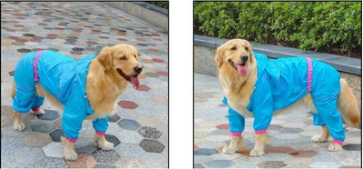

Žieminiai drabužiai - DND Talis

Sveiki atvykę į DND Talis internetinį puslapį! Prisijungti
Lietuvių kalba English Русский Mano paskyra Mano paskyra Mano krepšelis Apmokėti Prisijungti Krepšelis: 0 prekė(s)Prekių nėra
Prekės viso: 0,00 €Kainos be PVM
Krepšelis PirktiPrekė sėkmingai pridėta į krepšelį
Kiekis VisoKrepšelyje yra 0 prekė (-ės). Krepšelyje yra 1 prekė.
Viso (be PVM) Tęsti apsipirkimą Pereiti prie užsakymoAvalynė Pusbačiai ir sandalai Batai su auliuku Pusauliniai batai Lieta avalynė Klumpės Žieminiai Laisvalaikiui ir turizmui Priedai prie avalynės Drabužiai Darbo kostiumai Darbo švarkai Darbo puskombinezoniai Darbo kelnės ir bridžai Liemenės Striukės Džemperiai Specializuoti Suvirinimo darbams Kenksmingoms sąlygoms Padidinto matomumo Rūbai nuo lietaus Maisto pramonei Medicinai Marškinėliai Kombinezonai Prijuostės/Chalatai Žieminiai drabužiai Lietpalčiai Apatiniai drabužiai Kepurės Aksesuarai Antkeliai Rankų apsauga Diržai Petnešos Pirštinės Odinės Kitos Aplietos Trikotažinės Lietos Specializuotos Suvirinimo darbams Kenksmingoms sąlygoms Atsparios prapjovimui Specialios paskirties Žieminės Odinės Aplietos Tekstilės AAP Apsauginės priemonės darbui aukštyje Petnešiniai diržai Juosmeniniai diržai Lynai su amortizatoriais Lynai Kritimo sulaikymo blokai Jungtys Papildomos saugos priemonės Priedai Galvos AAP Šalmai Kepurės šalmai Priedai Klausos AAP Ausinės nuo triukšmo Ausinės su elektrine įranga Ausų kištukai Kvėpavimo AAP Respiratoriai Puskaukės Kaukės Filtrai Kvėpavimo aparatai Veido ir akių apsauga Akiniai Skydeliai Priedai Vienkartiniai Antbačiai Antrankoviai Kepuraitės Prijuostės Kombinezonai Antveidžiai Chalatai Pirštinės Dispenseriai Kiti Priešgaisrinės Pirmosios pagalbos Saugos ženklinimo Įrankiai Valymo priemonės Audiniai Aksesuarai Išpardavimai Pradžia Drabužiai > Žieminiai drabužiai Suvirinimo darbams Maisto pramonei Medicinai Statyboms Žemės ūkiui Laisvalaikiui ir turizmui Padidinto matomumo Miškininkams Moterims Naujos prekės Nuolaidos Geriausiai parduodamos Naudinga informacija Tinklelis Sąrašas Puskombinezonis šiltas Rewelly Kodas: PUZP 20,58 € be PVM Išorinis audinys – atsparus trinčiai, beveik nesiglamžo, nesugeria drėgmės, todėl greitai džiūsta, medžiaga atspari purvui. Out of Stock Puskombinezonis šiltas Rewelly Kodas: PUZP 20,58 € be PVM Išparduota Striukė su gobtuvu PILOT Rewelly Kodas: STZT-PILK 24,89 € be PVM Striukė užsegama užtrauktuku. Trumpa, pilotinio tipo striukė su išsegamu dirbtinio kailio pamušalu ir apykakle, nusegamomis rankovėmis. Į krepšelį Striukė su gobtuvu PILOT Rewelly Kodas: STZT-PILK 24,89 € be PVM Į krepšelį Striukė NEW HARDGO CANNYGO Kodas: STZI-NHRD 34,50 € be PVM Pašiltinimas: 220g/m² sinteponas. Pamušalas (pagrindinė dalis): Itin kokybiškas, švelnus, nesiveliantis flisas 220g/m². Pamušalas: 100% poliesteris, ženklintas firminiais „cannygo“ logotipais. Užsegimas: Aukštos kokybės dviejų pusių užtrauktukas , paslėptas po medžiagos kloste, kurios laikymąsi sustiprina Velcro juosta. Į krepšelį Striukė NEW HARDGO CANNYGO Kodas: STZI-NHRD 34,50 € be PVM Į krepšelį Striukė geltona/tamsiai mėlyna BRIGHTGO... Kodas: STZI-NBRGgl 39,95 € be PVM Striukė su aukšta reguliuojama apykakle ir nusegamu pašiltintu gobtuvu. Pašiltinimas: 200g/m² sinteponas. Pamušalas(pagrindinė dalis): itin kokybiškas, švelnus, nesiveliantis flisas 200g/m². Pamušalas: 100% poliesteris, ženklintas firminiais „Cannygo“ logotipais. Į krepšelį Striukė geltona/tamsiai mėlyna BRIGHTGO... Kodas: STZI-NBRGgl 39,95 € be PVM Į krepšelį Striukė oranžinė/tamsiai mėlyna BRIGHTGO... Kodas: STZI-NBRGor 39,95 € be PVM Striukė su aukšta reguliuojama apykakle ir nusegamu pašiltintu gobtuvu. Pašiltinimas: 200g/m² sinteponas. Pamušalas(pagrindinė dalis): itin kokybiškas, švelnus, nesiveliantis flisas 200g/m². Pamušalas: 100% poliesteris, ženklintas firminiais „Cannygo“ logotipais. Į krepšelį Striukė oranžinė/tamsiai mėlyna BRIGHTGO... Kodas: STZI-NBRGor 39,95 € be PVM Į krepšelį Striukė PILOT Canvas Hi-Vis CANNYGO Kodas: STZT-HPILKgl 39,20 € be PVM Trumpa, pilotinio tipo striukė su gobtuvu ir nusegamomis rankovėmis. Pašiltinimas: 200g/m² sinteponas. Pamušalas: 100% poliesteris ženklintas firminiais „cannygo“ logotipais. Į krepšelį Striukė PILOT Canvas Hi-Vis CANNYGO Kodas: STZT-HPILKgl 39,20 € be PVM Į krepšelį Puskombinezonis FARGO CANNYGO Kodas: PUZP-HRD 28,70 € be PVM Pašiltinimas: 220g/m² sinteponas. Pamušalas: 100% poliesteris OXFORD 600D, ženklintas firminiais „cannygo“ logotipais. Užsegimas: aukštos kokybės užtrauktukas. Į krepšelį Puskombinezonis FARGO CANNYGO Kodas: PUZP-HRD 28,70 € be PVM Į krepšelį Striukė PILOT Canvas REFLECTIVE CANNYGO Kodas: STZT-RPILKpl 34,52 € be PVM Trumpa, pilotinio tipo striukė su gobtuvu ir nusegamomis rankovėmis. Pašiltinimas: 200g/m² sinteponas. Pamušalas: 100% poliesteris, ženklintas firminiais „cannygo“ logotipais. Užsegimas: Aukštos kokybės dviejų pusių užtrauktukas , paslėptas po medžiagos kloste, kurios laikymąsi sustiprina Velcro juosta. Į krepšelį Striukė PILOT Canvas REFLECTIVE CANNYGO Kodas: STZT-RPILKpl 34,52 € be PVM Į krepšelį Striukė ALPI Rewelly Kodas: STZV-ALPI 39,80 € be PVM Užtrauktas paslėptas po papildoma audinio kloste. Rankogalių galuose iš vidinės pusės – papildomi trikotažiniai rankogaliai. Reguliuojamas striukės apačios dydis. Viršutinė kišenė užtraukiama vandeniui nepralaidžiu užtrauktuku. Dvi apatinės kišenės užtraukiamos vandeniui nepralaidžiais užtrauktukais. Į krepšelį Striukė ALPI Rewelly Kodas: STZV-ALPI 39,80 € be PVM Į krepšelį Striukė šilta ilga ARCTIC PARKA H/H Kodas: STZI-71336 210,00 € be PVM Gaminys iš Helly Tech® Performance audinio bet kokiu oru neleis jums sušlapti, o PrimaLoft® pašiltinimas yra geriausias pasirinkimas šaltomis oro sąlygomis. 140 metų darbo patirtis leido sukurti tokio lygio medžiagas. Gaminio sudėtis neleidžia jam trauktis ir blukti, padidintas atsparumas UV, taip prailgindamas gaminio vartojimo laiką. Į krepšelį Striukė šilta ilga ARCTIC PARKA H/H Kodas: STZI-71336 210,00 € be PVM Į krepšelį Striukė ilga MANCHESTER SHELL COAT H/H Kodas: STDI-71045 115,00 € be PVM Gaminys iš HellyTech®Protection vandeniui atsparaus ir kvėpuojančio audinio yra skirtas tiems atvejams kai norim turėti pakankamą apsaugą nuo vėjo ir lietaus. Gaminio sudėtis neleidžia jam trauktis ir blukti, padidintas atsparumas UV, taip prailgindamas gaminio vartojimo laiką. Į krepšelį Striukė ilga MANCHESTER SHELL COAT H/H Kodas: STDI-71045 115,00 € be PVM Į krepšelį Džemperis flisinis šiltas MANCHESTER... Kodas: DZDP-72065 60,00 € be PVM Džemperis su aukšta apykakle, per priekį užsegamas YKK užtrauktuku, kuris turi apsaugą prie smakro. Paminkštinta apykaklė suteikia papildomą komfortą. Į krepšelį Džemperis flisinis šiltas MANCHESTER... Kodas: DZDP-72065 60,00 € be PVM Į krepšelį Tinklelis Sąrašas 1 2 3 ... 6
Mūsų kompanija
Apie mus Naujienos KontaktaiAsortimentas
Naujos prekės Geriausiai parduodamos NuolaidosInformacija
Naudinga informacija Pristatymas Naudojimosi sąlygosSekite mus
© 2019 DND Talis. Darbo drabužiai ir apsauginė apranga. Svetainių kūrimas Please wait...